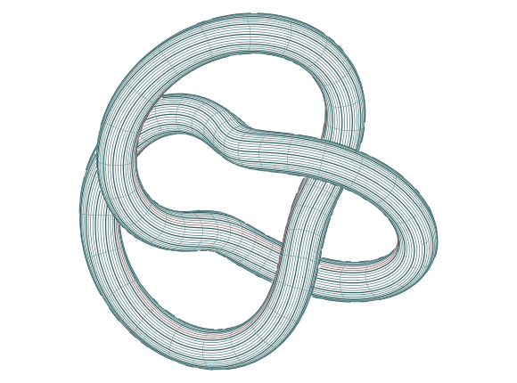
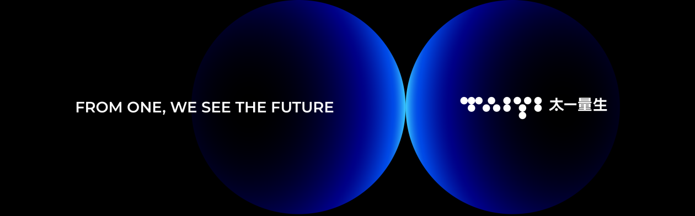
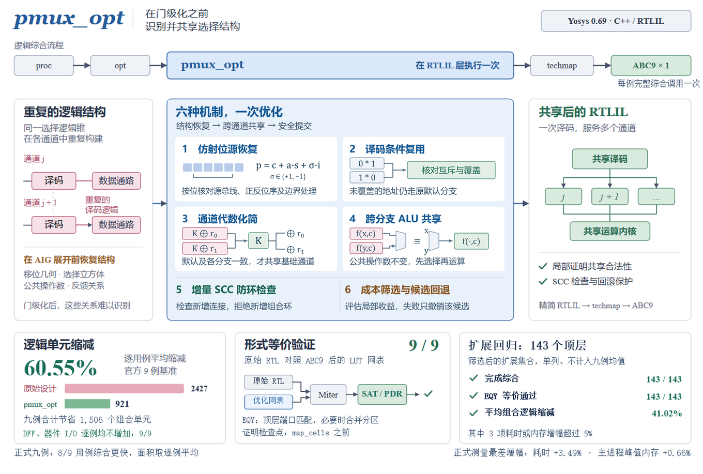
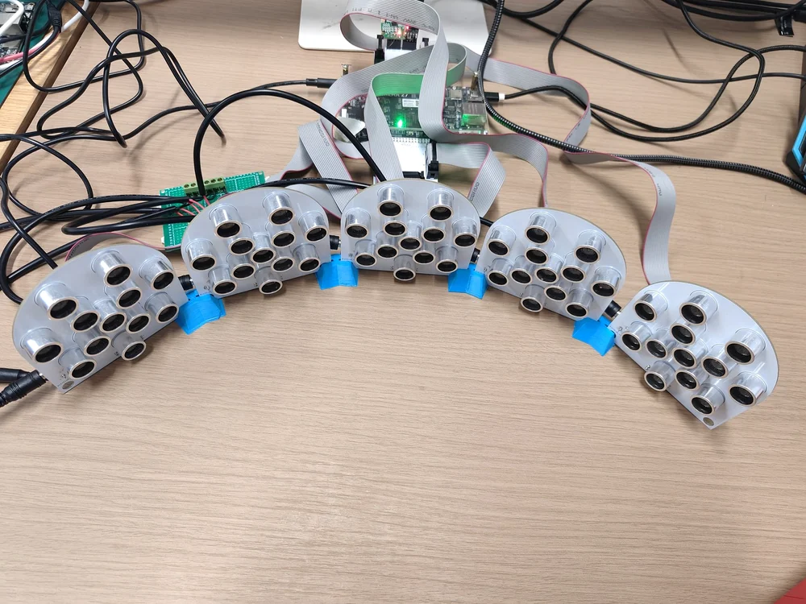
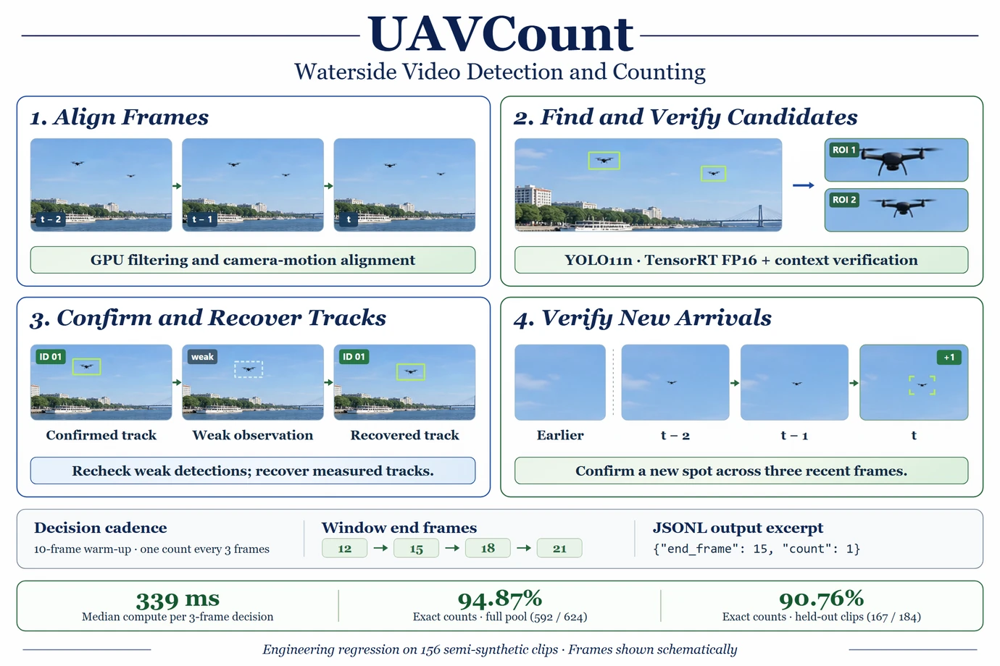

CXP 采集与显示
在 ZCU216 上实现两版 CXP 采集与显示系统，分别对接滨松 C15550-22UP 相机和星测电子 PCIe-1005 CXP 模拟卡。设计 CXP 至 AXI-Stream 转换和 FIFO 背压缓冲，搭建 SGDMA 写入 PL DDR、CDMA 搬运至 PS DDR 的两级通路，并实现 AXI DMA 直写 PS DDR 的备选路径。在 PetaLinux 下通过 UDP 回显图像。

Heterogeneous Computing & Systems | 异构计算与系统栈
FPGA Signal/Image Processing · HLS/CUDA Operator Acceleration
EDA Design · Quantum Computing · Linux Full Stack
Ethereal
南京理工大学 通信工程在读
研究 FPGA 图像处理、数字频谱分析和信号跟踪，目前探索中性原子量子计算（Neutral Atom Quantum Computing）。

控制算法工程师
在 ZCU216 上实现两版 CXP 采集与显示系统，分别对接滨松 C15550-22UP 相机和星测电子 PCIe-1005 CXP 模拟卡。设计 CXP 至 AXI-Stream 转换和 FIFO 背压缓冲，搭建 SGDMA 写入 PL DDR、CDMA 搬运至 PS DDR 的两级通路，并实现 AXI DMA 直写 PS DDR 的备选路径。在 PetaLinux 下通过 UDP 回显图像。
设计 4-bank 行分片 DATAFLOW 流水线，通过三副本行缓存和冲突仲裁解决多读口冲突，实现窗口提取与乘加流水化。用二分法预计算判决边界，将实时浮点比较替换为整数判决。在 300 MHz 下，单帧延迟为 0.268 ms。
设计基于 40 位行列掩码的双轴重排流水线，通过分配、压缩和按需均衡填充中心目标区。每条搬运以一拍 256 位 AXI4-Stream 指令输出，最多包含 16 对源与目的坐标。在 250 MHz 下，500 原子基准帧的板上实测规划耗时为 13.57 μs。重排核布线后占用 5,077 LUT、4,388 FF，BRAM 与 DSP 用量均为 0。
在 ZCU216 上实现 X/Y 双轴多音调 RF 波形合成。每轴支持 16 音调，通过四路并行 CORDIC 生成连续 I/Q 样本，经多音调求和、包络整形后打包送入 RF-DAC，支持频率配置、扫频与包络控制。
Target: DAC 2027 Neutral-atom readout · FPGA architecture
Abstract. This work studies high-speed neutral-atom readout on an FPGA. The design processes fluorescence images in camera scanline order, reuses pixels across overlapping site windows on chip, and overlaps occupancy detection with image acquisition. The evaluation examines how detection latency changes as the atom array grows.


初赛分别优化消息认证、压缩和矩阵分解；决赛换到 Zynq，显示射频或音频输入的功率谱。

示波器 X 轴接原始信号，Y 轴接 FPGA 的 DDS 输出。调整两轴的相位和频率关系，就能改变屏上的图形。

摄像头送来 RGB565 像素，FPGA 在帧边界切换算法。处理后的图像既能本地显示，也能传回电脑。



中科亿海微赛道 · Yosys PMUX 优化
江苏赛区 · F 题
伪相控阵定向传声
中科亿海微赛道 · FPGA 图像处理
AMD 赛道 · HLS 算子优化与频谱仪